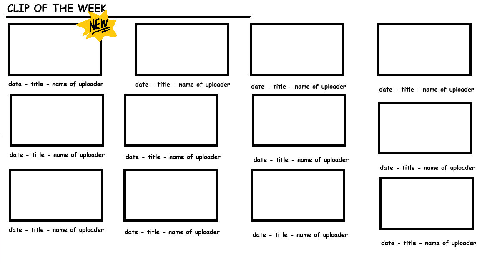
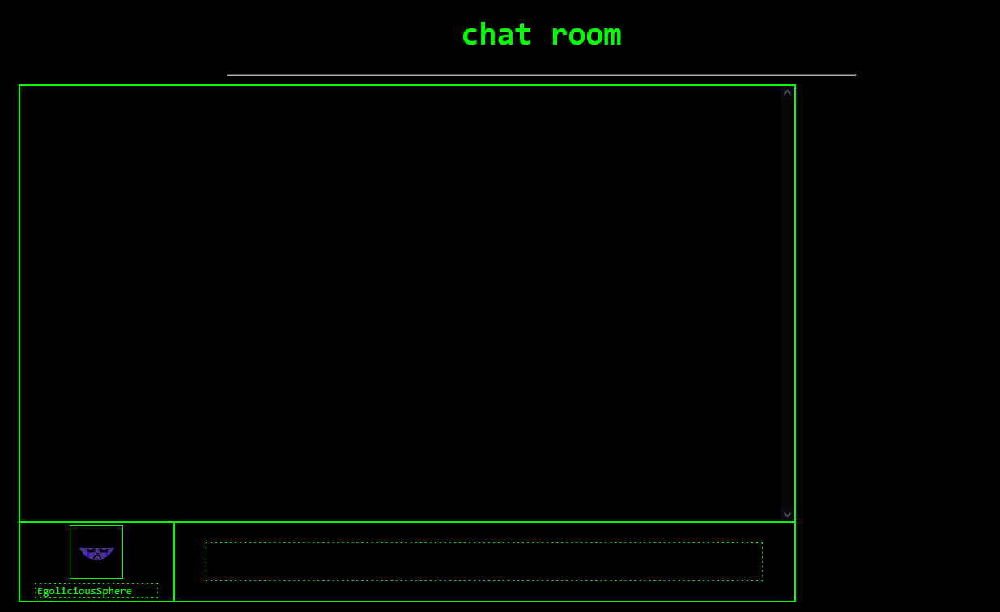

9/18/26
Kayla
Every feature on DONALDANI.org starts with an idea.
Typically, those ideas come from Donald. It is his site after all! And typically, a lot of the ideas tend to be quite complicated. Fortunately, I'm not one to shy away from a challenge. One such complicated idea was the chatroom. So, in this post, I'll walk you through the process of idea to shippable feature.
A lot of development details end up lost to time due to the rapid prototyping and turnaround periods that most features on DONALDANI.org experience. Many of the features of this site, including the blogs, are finished in a day, if not less. This blog post is not a historical record, just my own personal recollection of how it all happened.
I believe that the chatroom originally started as me bouncing the idea of a forum off of Donald. He, rightfully, said that it would be too much effort, so we scaled the idea back until it became the chatroom of today. The first step of turning an idea into a user-ready feature is usually a drawn concept for the frontend. While the original concept for the chatroom is lost, below is an example of the type of concepts that Donald usually gives me.

The original concept for 'Clip of the week'
Concepts tend to be quite simple, leaving filling the details up to me as I build the page.

The first pushed iteration of the chatroom
The chatroom exists! Or, at least, a very bare-bones version of it does. Working on one thing and one thing only gets boring for me fast, so once I got to this point I turned my attention to the backend. At this point in the life cycle of DONALDANI.org, it didn't have its dedicated API backend yet, so what was left to use? Well, my Discord bot Party Phil has a webserver! So, for the first several months of existence, this website's backend was hosted on a Discord bot.
There's lots to consider when making a feature as open-ended as this. Unfortunately, I am diagnosed with ADHD. Whoops! As a result, the backend is so messy that it never properly left the Party Phil ecosystem. To this day, the chatroom is still running off of my Discord bot. But that's besides the point. The first iteration of the chatroom had all of three features:
Pretty solid start, huh? Seems like it's nearing completion! But no, because Donald has a new idea:
"What if we had special icons and notification sounds and chat colors?"
This is, perhaps, the last thing I wanted to hear. So you know what that means! Time to recode the entire frontend to be about 10x worse to navigate but theoretically a bit more clean! You know, the next logical step. So, that spends about 3 hours in the oven. Now's a good time to say that through the entire process of building the chatroom, we were in a call. It had been going on for about 8 hours now. But once that's all over, I can finally sit back and relax, knowing the chatroom is finished...
...for about 10 minutes, before I have an idea:
"What if, instead of hammering the endpoint, it connected with a websocket?"
You know what that means! Time to recode the entire frontend again, this time structuring it in such a way that it's no longer tethered to an infinite 5-second loop. I didn't know how websockets worked at this point. Whoops! Time to learn how those work both in JavaScript AND Python + FastAPI.
The call's been going on for about 10 hours now. The chatroom's up, it's working, everything's going swell. Then Hexose has an idea:
"What if you could reply to messages?"
THANKFULLY, this was a feature that I didn't need to make myself. Hexose is a damn good programmer and was able to add that in himself, which is the only piece of outside code in the entirety of DONALDANI.org. And finally, with all of that added, the chatroom was finished and is in the state that it is today.
---
Crazy how much effort went into this one feature, huh? Thankfully, almost no single other feature of DONALDANI.org took nearly this much work to make. The majority of them, like I said, only take about a day to implement. There's really no moral of this story, I just thought the process of making the chatroom was really funny. Thanks for reading!